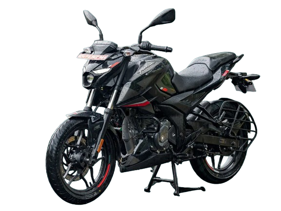

myBike
Clasic Sports Edition
Ride like the legend
The Pulsar N160 is a motorcycle that demands attention for its performance, design, and features. Powered by a potent engine, it delivers a balanced blend of power and fuel efficiency. The bike's handling and comfort,along with modern design elements, contribute to an overall appealing package.Equipped with advanced features like ABS and digital displays,it offers a contemporary riding experience. User feedback and expert reviews are essential to gauge real-world performance and reliability.
Rs.150000
